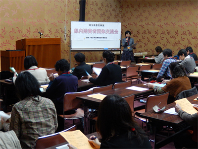
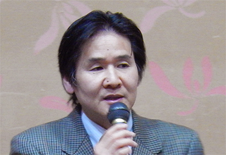
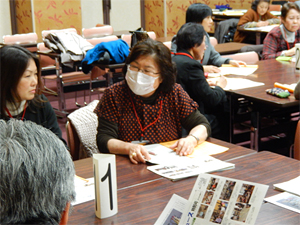
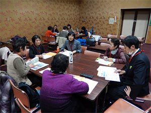

2014年度県内消費者団体地区別交流会（春日部会場）が2月5日、春日部市で開催されました。会場となった春日部市市民文化会館 大会議室には、県域・地域の消費者団体9団体ほか30人が参加しました。

今年度の地区別交流会は、昨年4月に改正された、改正消費者安全法にもとづく地域の見守りネットワークや地域連携について学習し、消費者団体がいま、地域でできることを話し合うこと、同じ地域で活動する消費者団体同士で情報交換し、地域の実情に即した活動を考え、活動の活性化につなげる場とすることを目的に開催しました。
最初に、「改正消費者安全法に基づく見守り～次のステップは地域連携！」と題して、弁護士の満尾直樹さんを講師に学習しました。
| 満尾直樹弁護士 |
はじめに満尾さんは、消費者行政の情勢に触れ「消費者教育推進法、今回の消費者安全法改正によって示されたのは、行政による消費者啓発・被害防止から、地域連携の推進と消費者市民の育成へ変化させたことです。積極的に私たちも関わりましょう」と話しました。その後、消費者被害の現状、防止に向けた取り組みを紹介し、最後に私たちの課題として、 地域の見守りネットワークへの参加、
地域の見守りネットワークへの参加、 消費者市民育成を行政に働きかけること、
消費者市民育成を行政に働きかけること、 地域協議会の設置、
地域協議会の設置、 消費者行政担当職員の増員・資質向上を求めることの4つを挙げていただきました。
消費者行政担当職員の増員・資質向上を求めることの4つを挙げていただきました。
続いて事例報告では、地域でおこなわれている高齢者のサポート事例・消費者被害の現状が報告を報告いただきました。上尾市で保健・医療・福祉・地域安全などに取り組んでいるNPO法人助け合い村の高野 保さん、金子恵子さんから、軽度認知症の方への相続時の不当請求の事例、認知症の方への生活サポートをめぐるトラブルの事例、一人暮らしの高齢者の見守りなど、実際の事例が紹介されました。そのほか、現在県内の各自治体が取り組んでいる見守りネットワークの概要について、事務局より報告をおこないました。
|  | |
| NPO法人助け合い村 高野 保さん | NPO法人助け合い村 金子恵子さん |
改正消費者安全法の学習と、最寄りでの見守り活動事例報告を受けて交流会に移り、「地域で私たちにできること」を5つのグループにわかれて、話し合いました。
交流の中では、体験した消費者被害に結びつく事例や特殊詐欺の事例なども出しあいました。参加者からは「日頃からのつながりや、おせっかいが大切。消費者問題にちょっと詳しい私たちがおせっかいをやきましょう」など感想が寄せられました。
＜交流会の模様＞
|  |  |
＊県内消費者団体地区別交流会
県内各地域の消費者団体が集まって情報交換し、地域の実情に即した活動を共に考え、消費者活動の活性化につなげていこうと、毎年春に開催されています。
この企画は、平成26年度埼玉県委託事業として開催され、春日部会場には、さいたま市、白岡市、加須市の各自治体からもご参加いただきました。
お問い合わせ
埼玉県消費者団体連絡会 事務局 電話 048－844－8971（埼玉県生協連内）